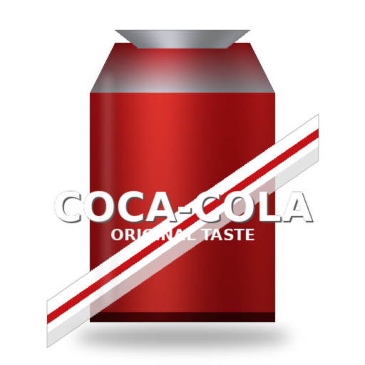
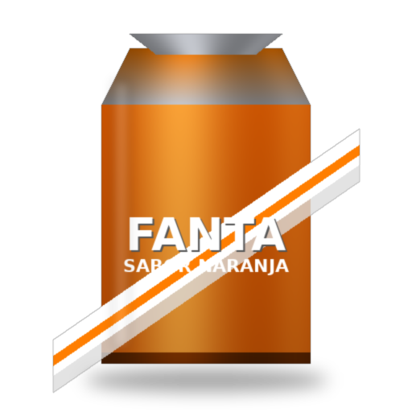
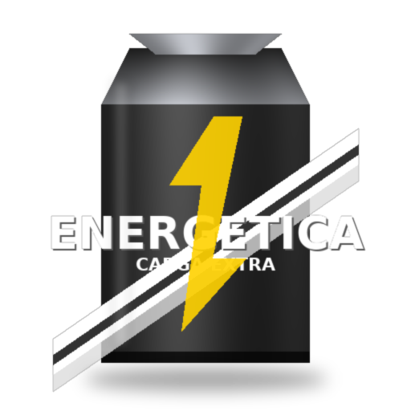
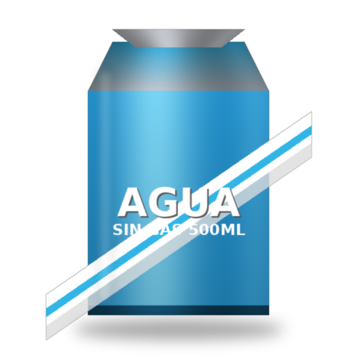
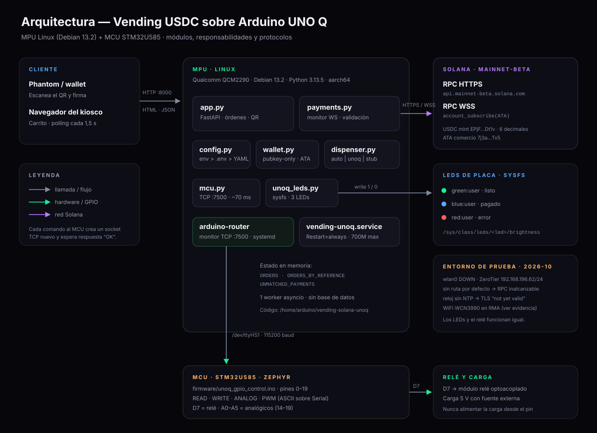
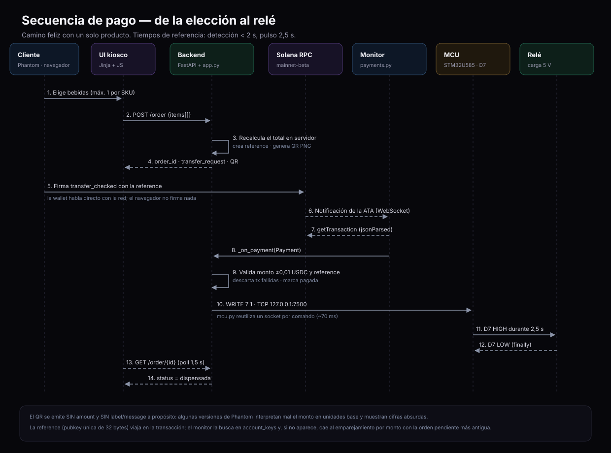
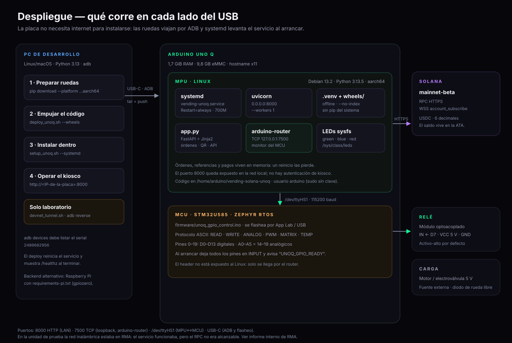

Vending Solana USDC
La máquina expendedora que acepta USDC y dispensa con el MCU. Sin monedas, sin datáfono y sin clave privada en la placa.




Cobrar sin datáfono, sin intermediarios
Una tienda de autoatención completa dentro de una placa: el cliente escanea un QR de Solana Pay, paga USDC desde su wallet y la máquina dispensa. El comercio recibe directo en su cuenta; la placa solo verifica.
Los pagos tienen dueño
Los datáfonos imponen comisiones, contratos y hardware cerrado. Integrar un pago propio suele significar una pasarela que retiene el dinero, añade latencia y decide cuándo te paga.
Un QR, liquidación directa
Solana Pay convierte cualquier pantalla en un punto de cobro. El cliente paga USDC a la wallet del comercio y la placa confirma la transferencia contra un reference único. Sin custodia, sin clave privada que robar.
Cómo funciona, paso a paso
Del carrito al relé: seis pasos, cada uno con su validación y su estado visible.
El cliente arma el carrito
Hasta ocho SKUs distintos, una unidad por producto, con el total siempre visible en la pantalla.
El backend crea la orden
Valida los SKU y recalcula el total desde catalog.yaml. El navegador nunca decide el monto.
Aparece el QR de Solana Pay
El QR lleva wallet, mint de USDC y un reference único, pero no el monto: el cliente digita el total exacto.
El monitor escucha la cadena
WebSocket a Solana más reconciliación cada 2 s. Valida mint, monto y reference antes de dar el pago por bueno.
El MCU dispensa
Un pulso de 2,5 s en D7 a través de arduino-router. Cada bebida se despacha en orden, con LEDs de estado.
La orden se cierra
Estado dispensada, carrito limpio y feedback en pantalla. La venta queda registrada para auditoría.
Una placa, dos cerebros y la cadena
El Linux embebido corre la web y el monitor de pagos; el STM32U585 es el único que toca el relé. La separación es deliberada: el dinero vive en la nube, la acción física en el MCU.

Backend sin estado crítico
Las órdenes se persisten y el reference hace de idempotency key.
El MCU no negocia
El Linux le envía un comando de pulso; el sketch jamás manipula pagos.
Todo por USB y systemd
Despliegue con tar sobre ADB, servicio con límite de 700 MB.
Decisiones de ingeniería
Las decisiones que separan una demo bonita de una máquina que puede operar con dinero real.
Total calculado en el servidor
El precio sale siempre de catalog.yaml. El navegador no puede alterar el monto ni inyectar SKUs.
QR sin amount
El cliente digita el total exacto. El backend valida la transferencia contra el reference, no contra un número confiado.
Modelo pubkey-only
La placa guarda solo la clave pública del comercio. No hay clave privada que extraer de la máquina.
Idempotencia por reference
Una orden no se dispensa dos veces aunque lleguen eventos duplicados o se reinicie el servicio.
MCU real, no GPIO emulado
El pulso del relé lo genera el STM32U585 y lo expone arduino-router en 127.0.0.1:7500.
Despliegue reproducible
Tar por ADB, venv sin pip, wheels predescargadas y unidad systemd con memoria acotada.
Con qué está construido
Python en el MPU, firmware en el MCU y la cadena de Solana como fuente de verdad del pago.
El negocio está en Python; la acción física, en el MCU. La cadena se consulta por WebSocket y se reconcilia por HTTP para no depender de un solo camino.
$ git clone https://github.com/wanderc137/vending-solana-unoq $ cd vending-solana-unoq $ cp .env.example .env # wallet, red y dispenser $ bash scripts/setup_unoq.sh # prepara el entorno en la placa $ bash scripts/deploy_unoq.sh --wheels $ adb shell sudo systemctl start vending-unoq


Todo está escrito
Cada decisión, cada límite y cada comando están documentados en el repositorio. Sin folletos: lo que funciona se muestra, lo que no, también.
Datasheet
Instalación, operación, catálogo, configuración y mantenimiento, con los códigos de error y el modelo de seguridad.
Abrir documento CódigoGuía de desarrollador
Arquitectura módulo por módulo: app.py, payments.py, dispenser.py, mcu.py, wallet.py y los scripts.
Abrir documento FuentesReferencias
Solana Pay, SPL Token, solana-py, FastAPI, Arduino UNO Q y arduino-router, con el porqué de cada enlace.
Abrir documento¿Construimos algo así?
Si te interesa integrar pagos cripto en hardware propio, automatizar una tienda o llevar una idea de cobro a una placa, hablemos. Este proyecto es la prueba de que se puede hacer con componentes reales.